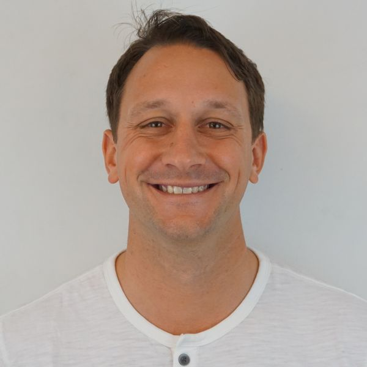

Principal Engineer · Forward Deployed Engineering
Computer vision match analytics for platform tennis — running at 8 clubs with 900+ match videos.
League software for amateur sports, with lebrAIn — an AI copilot that runs the league from a single sentence.
College lacrosse recruiting on real commitment data — used by Laxachusetts, one of the top girls’ programs in the country.
A full stack iOS app providing premium tutoring to underprivileged students — 10,000+ downloads in its first year.
Capital One
Meta
EarthCam, Inc. · Saddle River, NJ
University of Bridgeport · Bridgeport, CT